Meus trabalhos
Impresso
No impresso, a experiência é com a produção de conteúdo jornalístico de diversos temas para revistas e jornais semanais e/ou diários.
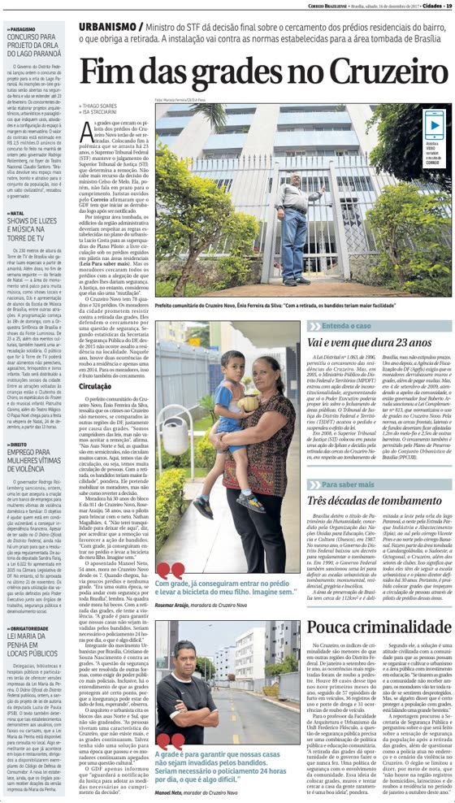
Ler matériaCorreio BrazilienseFim das grades no Cruzeiro
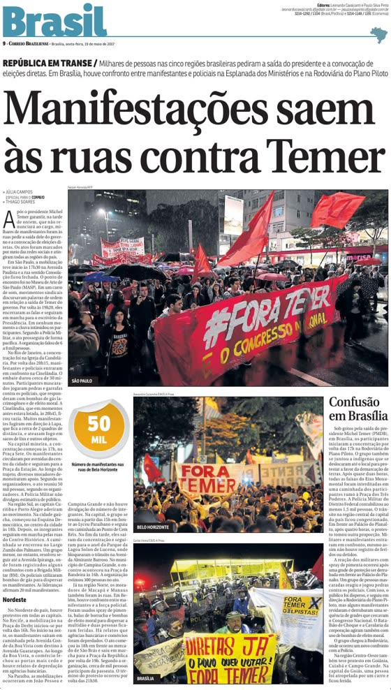
Ler matériaCorreio BrazilienseManifestações saem às ruas contra Temer
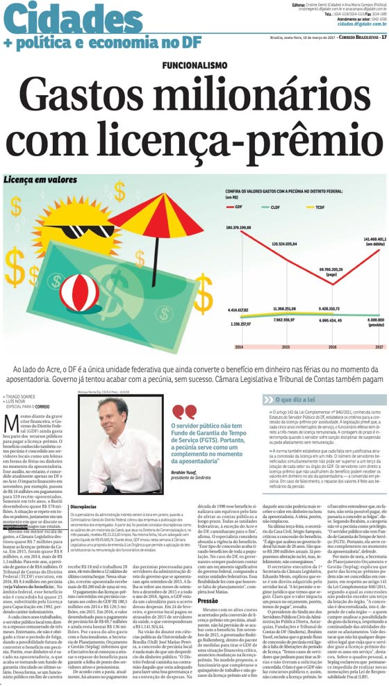
Ler matériaCorreio BrazilienseGastos milionários com licença-prêmio
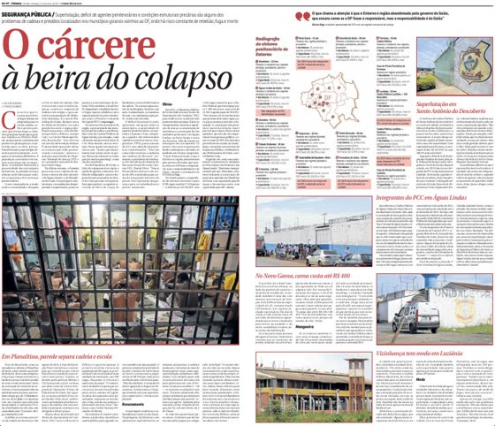
Ler matériaCorreio BrazilienseO cárcere à beira do colapso
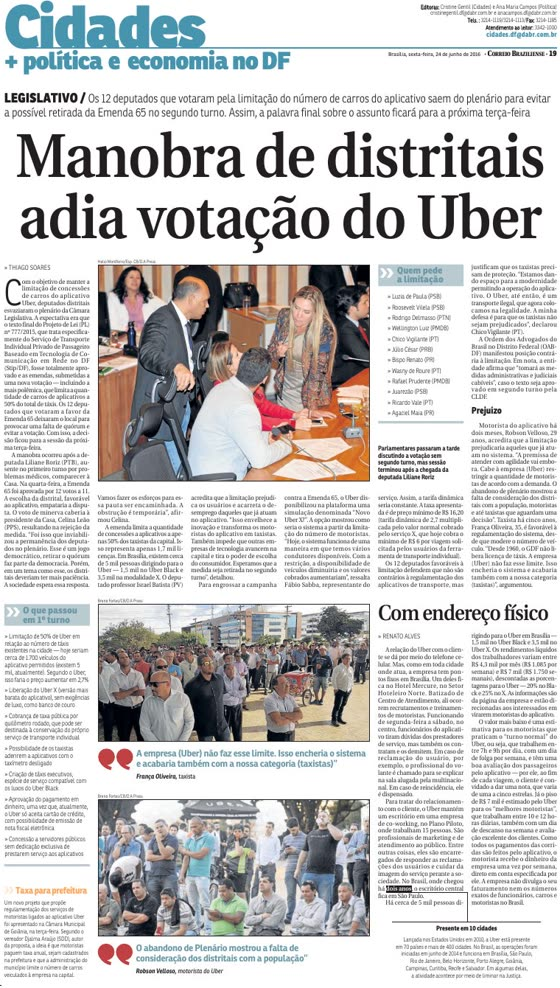
Ler matériaCorreio BrazilienseManobra de distritais adia votação do Uber
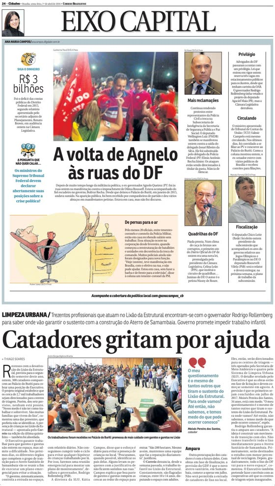
Ler matériaCorreio BrazilienseCatadores gritam por ajuda
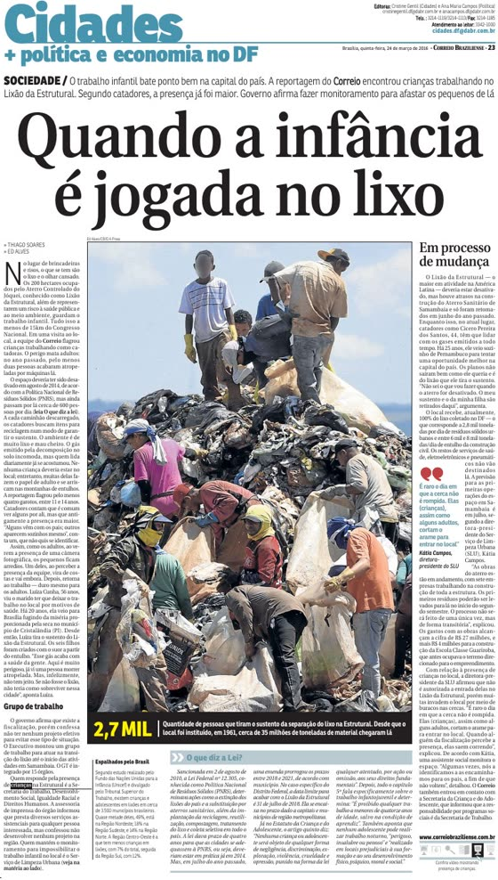
Ler matériaCorreio BrazilienseQuando a infância é jogada no lixo
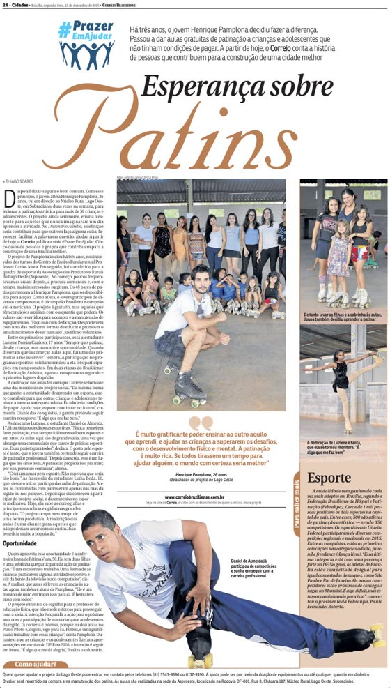
Ler matériaCorreio BrazilienseEsperança sobre patins
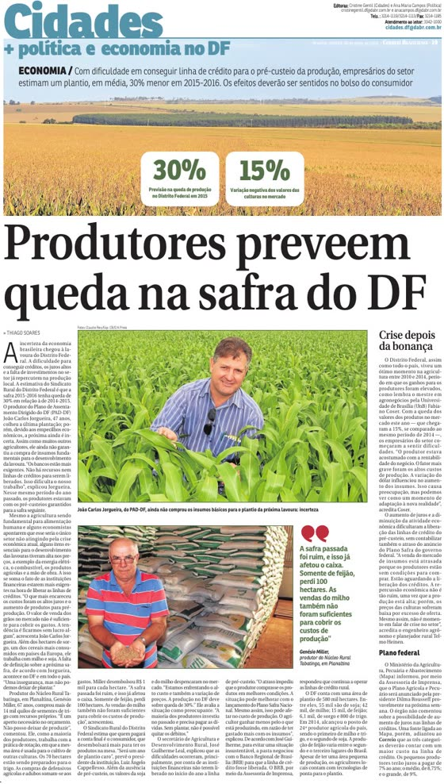
Ler matériaCorreio BrazilienseProdutores preveem queda na safra do DF
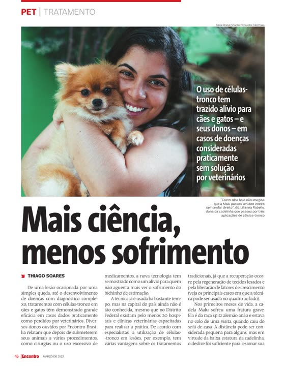
Ler matériaRevista EncontroMais ciência, menos sofrimento
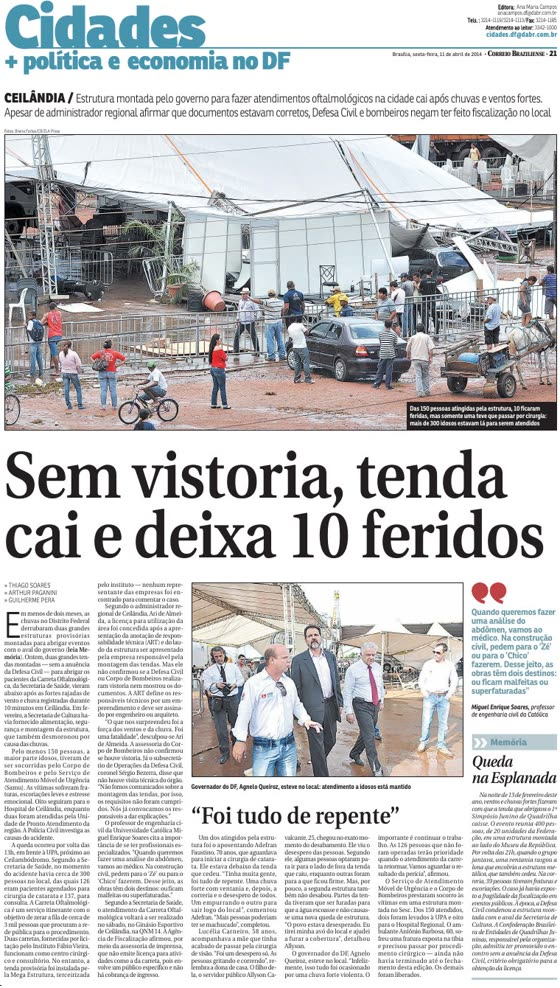
Ler matériaCorreio BrazilienseSem vistoria, tenda cai e deixa 10 feridos
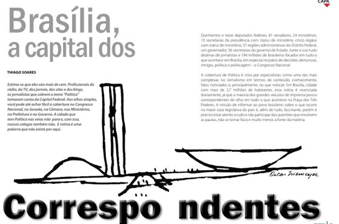
Ler matériaRevista PQN